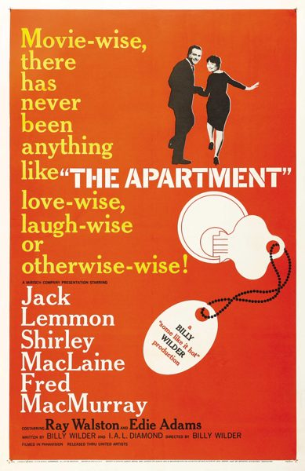

The Apartment
Starring: Jack Lemmon, Shirley MacLaine, Fred MacMurray
Director: Billy Wilder
Writer: Billy Wilder, I. A. L. Diamond
Producer: Billy Wilder
Studio: The Mirisch Company
The Apartment is a 1960 American romantic comedy film directed and produced by Billy Wilder from a screenplay he co-wrote with I. A. L. Diamond. Jack Lemmon stars as an insurance clerk who, in hopes of climbing the corporate ladder, allows his superiors to use his Upper West Side apartment to conduct their extramarital affairs.
Trivia
- Won the Academy Award for Best Picture.
- Won the Academy Award for Best Director.
- Won the Academy Award for Best Film Editing.
- Won the Academy Award for Best Writing, Original Screenplay.
- Won the Academy Award for Best Art Direction, Black and White.
- Selected for the National Board of Review: Top Ten Films.
- Also nominated for: Academy Award for Best Supporting Actor; Academy Award for Best Actor; Academy Award for Best Actress; Academy Award for Best Cinematography, Black-and-White; and 1 more.
- Immediately following the success of 1959's Some Like It Hot, Wilder and Diamond wished to make another film with Jack Lemmon.
- Wilder had originally planned to cast Paul Douglas as Sheldrake; however, after he died unexpectedly, Fred MacMurray took his place.
- The initial concept was inspired by Brief Encounter by Noël Coward, in which Laura Jesson (Celia Johnson) meets Alec Harvey (Trevor Howard) for a tryst in his friend's apartment, which ends up thwarted.
Filming Locations
- New York City
Previous Showings
14 Runs • 9 Festivals
28,785 tickets sold
Original Billings: 2 runs (June 29, 1960 - April 21, 1961)
Original Run: June 29, 1960 (Wednesday - Saturday)
All runs on record (14):
- June 29, 1960 (Wednesday - Saturday)Jack Lemmon, Shirley MacLaine
- April 21, 1961 (Friday - Thursday)Jack Lemmon, Shirley MacLaine
- March 25 - April 7, 1994 · 6,113 ticketsw/ Some Like It Hot
- August 31 - September 3, 1996 · 2,141 ticketsw/ Some Like It Hot
- June 17 - 29, 2000 · 5,162 ticketsSummer 2000w/ Some Like It Hot, Marilyn Monroe, Jack Lemmon
- July 6 - 10, 2001 · 1,830 ticketslemmonw/ Avanti!
- July 4 - 9, 2002 · 4,549 ticketssummer02w/ Some Like It Hot
- March 28 - 30, 2009 · 1,194 ticketsWinter 2009w/ It Should Happen to You
- October 16 - 17, 2009 · 1,018 tickets20th Anniversary Festivalw/ Some Like It Hot
- August 4 - 7, 2012 · 1,823 ticketsSummer 2012w/ Breakfast at Tiffany's
- May 19 - 21, 2017 · 1,592 ticketsClassic Comedy With Cary Grant, Carole Lombard, W.C. Fields and more!w/ Breakfast at Tiffany's
- September 22 - 25, 2022 · 1,211 ticketsw/ Breakfast at Tiffany's
- September 27 - 28, 2025 · 1,633 ticketsSummer 2025w/ Some Like It Hot
- August 12 - 13, 2026 · 519 ticketsSummer 2026 including the Films of Marilyn Monroew/ Love Nest